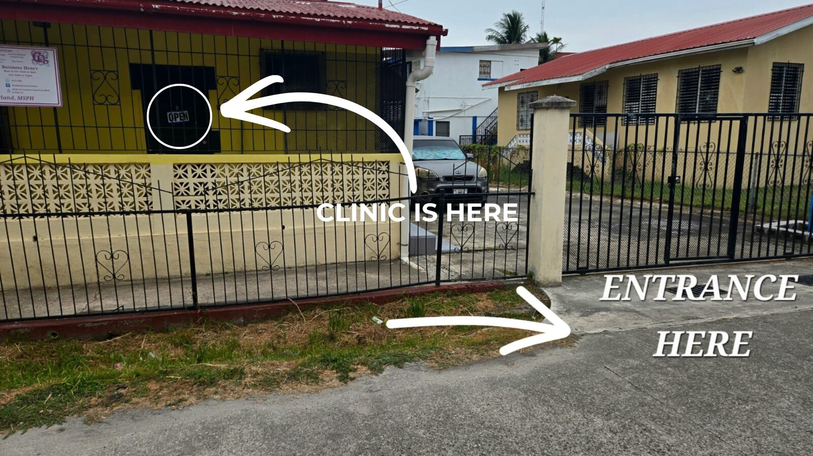
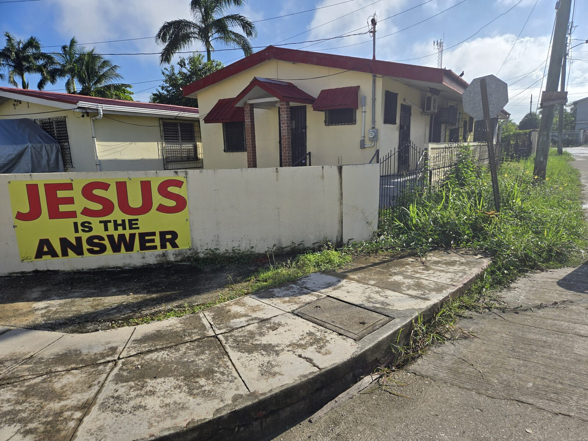
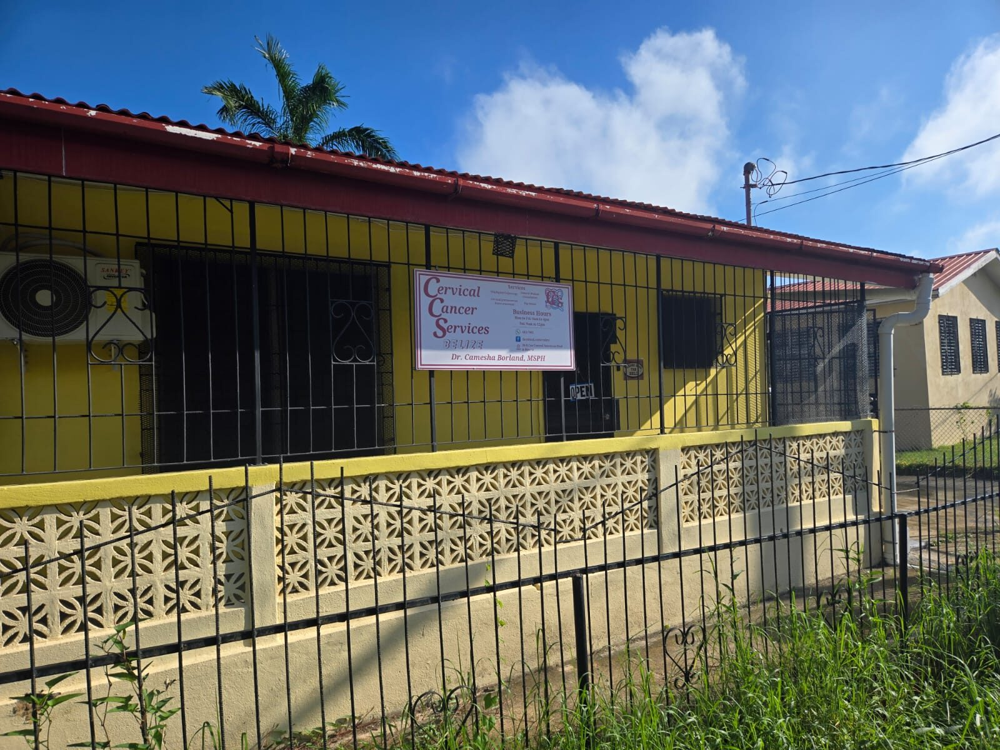
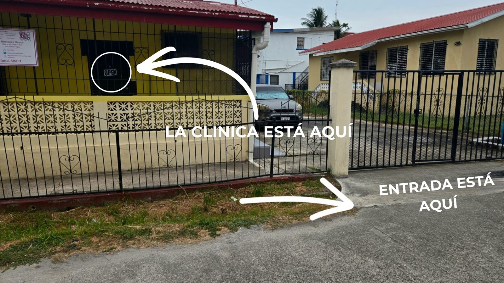

Step-by-step photos to help you find us, in English and Spanish.

This is a picture from Central American Boulevard. You have to go around the roundabout and on the way down, you'll see this.

You turn into Pine Street and you'll see the sign for the clinic. Please note that the clinic is at the BACK of the building. There is a clinic at the front that's for someone else.

The entrance is a small gate to the back.
or scan the QR code

Este es una foto de Central American Boulevard. Tiene que dar la vuelta a la rotanda y al bajar, eso es lo que verá.

Entra en esta esquina a Pine Street y verá la seña para la clinica. La clinica está en la parte de atrás del edificio. Hay una clinica en frente que es para otra persona.

La entrada es un porton pequeño atrás.
o escanear el código de QR